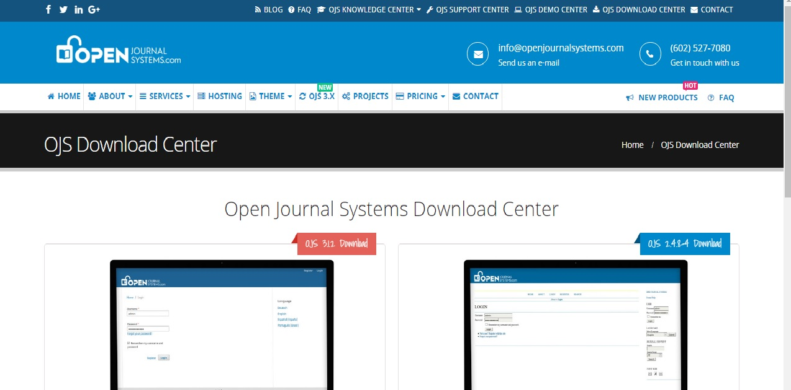

Edición digital
Alicia Contreras Rico
Producción de materiales educativos
Práctica 5
Indice de contenidos
Introducción
El libro electrónico
HTML5
EPUB
El libro enriquecido
Open Journal System
Introducción
Con la digitalización surgen nuevas formas de leer
Digitalización en la lectura
Tema 1
El libro electrónico
Ventajas vs. Desventajas
Ventajas
Desventajas
No espacio físico
No se deterioran
Requiere de un dispositivo
Fáciles de piratear
Tema 2
HTML5
Tema 3
EPUB
Programas y extensiones para leer EPUB
EPUBREADER
: extensión para FIREFOX MOZILLA
SIMPLE EPUB
: extensión para el navegador CHROME
Calibre
Sony Readers
Adobe Digital Editions
Tema 4
El libro enriquecido
Concepto
Situación editorial
Situación editorial en España
Ejemplos
My body a Wunderkammer
Libro enriquecido
Tema 5
Open Journal System
